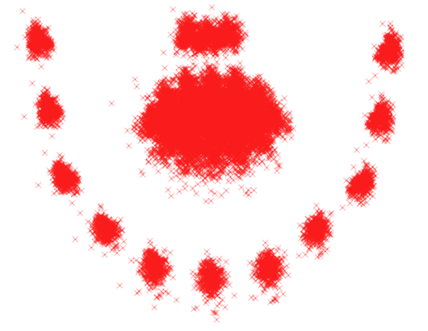
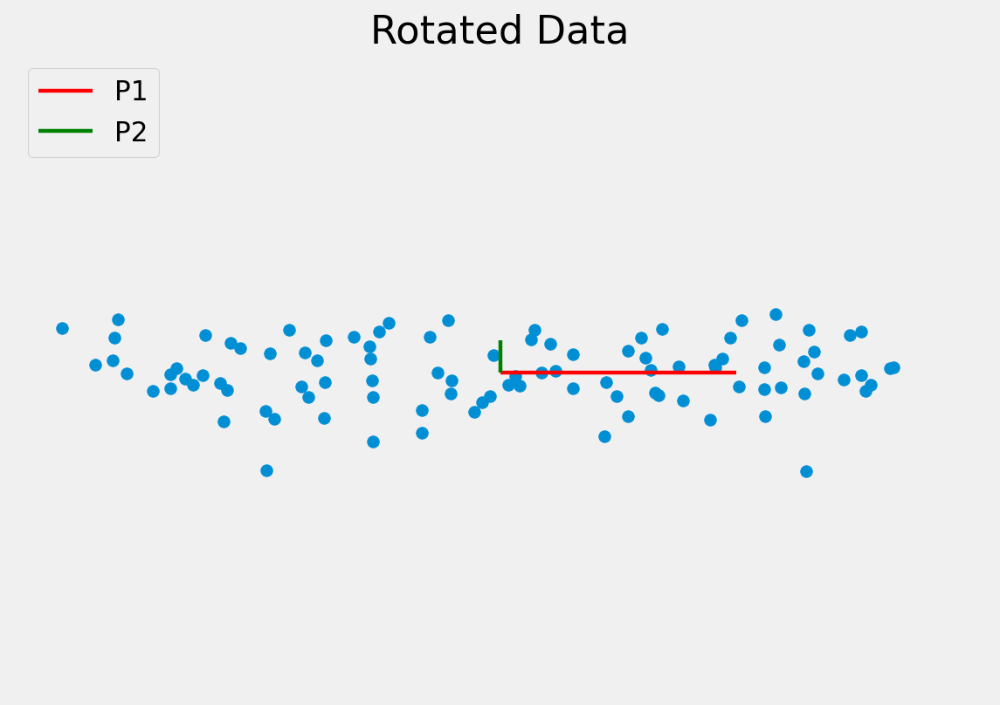
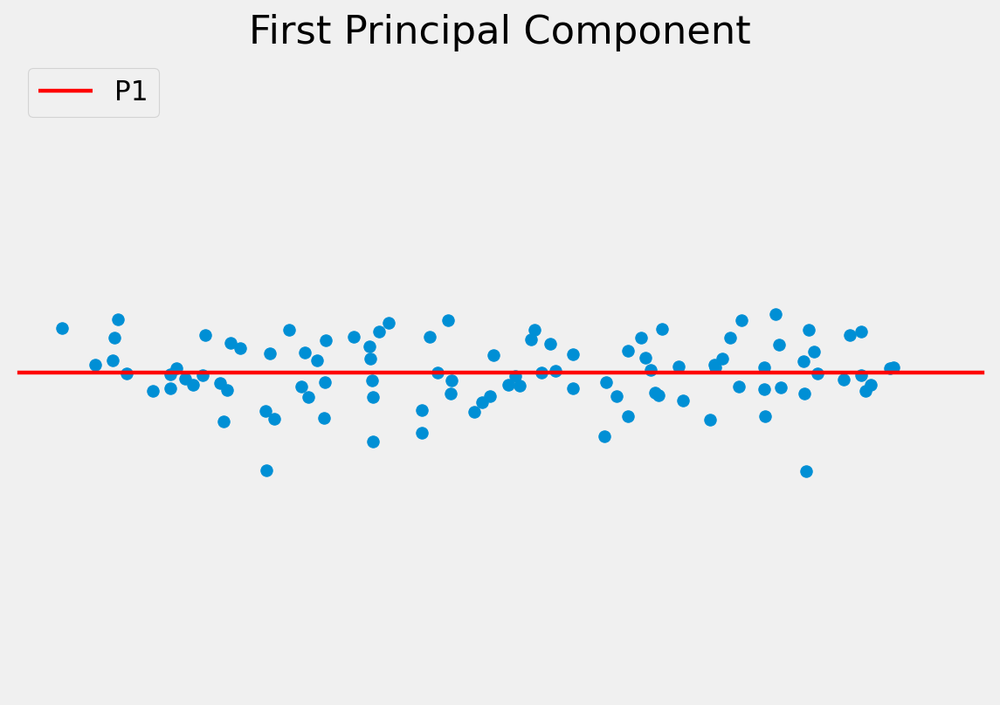
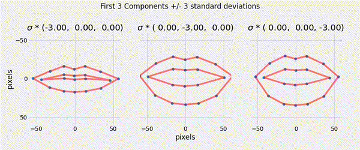

Content
- Point Distribution Models
- Procrustes Analysis
- Principal Component Analysis
Computer Vision CMP-6035B
Dr. David Greenwood
A generative statistical model of the variation of the shape of an object.
If something specific about the shape is known, it should be incorporated into the image search.
A point distribution model (PDM) learns the allowed variation in a class of shapes from examples.
A shape is represented by a set of landmarks located along the shape boundary.
To better represent the overall shape, also evenly space intermediate points along the boundary.
All example shapes must have the same number of landmarks and be labelled with the landmarks in the same order.
Sufficient images must be labelled to capture the expected range of variation.
Mathematically, a shape is the concatenation of the \(x\) and \(y\) coordinates of the landmarks.
\[ \mathbf{x} = \{ x_{11}, x_{12}, ..., y_{11}, y_{12}, ...y_{1n} \}^{T} \]
The consistency in the labelling ensures the elements of these vectors have the same meaning.

The coordinates describe the shape in the image coordinate frame.
We need to normalise shapes for translation, scale and rotation. This can be done using generalised Procrustes analysis.
Procrustes, the son of Poseidon, from Greek mythology.
Convergence is a small change in the mean.
To align shapes:
\[ \begin{aligned} \mathbf{x}_{1} &= \{ x_{11}, x_{12}, ..., y_{11}, y_{12}, ...y_{1n} \}^{T} \\ \mathbf{x}_{2} &= \{ x_{21}, x_{22}, ..., y_{21}, y_{22}, ...y_{2n} \}^{T} \end{aligned} \]
Scale and rotation is defined by \(M\), and translation by \(\mathbf{t}\):
\[ M(s, \theta) = \begin{pmatrix} \mathbf{x}_{2i} s \cos \theta - \mathbf{y}_{2i} s \sin \theta \\ \mathbf{x}_{2i} s \sin \theta + \mathbf{y}_{2i} s \cos \theta \end{pmatrix}~ ~\mathbf{t} = \begin{pmatrix} t_{x} \\ t_{y} \end{pmatrix} \]
The parameters for scaling, rotation and translation are unknown.
Define a metric that measures how well two shapes are aligned.
\[ E = (x_1 - M(s, \theta) \mathbf{x}_2 - t) ~W (x_1 - M(s, \theta) \mathbf{x}_2 - t)^T \]
where \(W\) is a diagonal weighting matrix.
We can alternatively write the equation as:
\[ \begin{split} E = \sum_{i=1}^n & w_i \left[ \begin{pmatrix} x_{1i} \\ y_{1i} \end{pmatrix} - \begin{pmatrix} x_{2i} s \cos \theta - y_{2i} s \sin \theta \\ x_{2i} s \sin \theta + y_{2i} s \cos \theta \end{pmatrix} - \begin{pmatrix} t_{x} \\ t_{y} \end{pmatrix} \right] \\ & \left[ \begin{pmatrix} x_{1i} \\ y_{1i} \end{pmatrix} - \begin{pmatrix} x_{2i} s \cos \theta - y_{2i} s \sin \theta \\ x_{2i} s \sin \theta + y_{2i} s \cos \theta \end{pmatrix} - \begin{pmatrix} t_{x} \\ t_{y} \end{pmatrix} \right] \end{split} \]
Let \(a_x = s \cos \theta~\) and \(~a_y = s \sin \theta\) and substitute:
\[ \begin{split} E = \sum_{i=1}^n & w_i \left[ \begin{pmatrix} x_{1i} \\ y_{1i} \end{pmatrix} - \begin{pmatrix} x_{2i} a_x - y_{2i} a_y \\ x_{2i} a_y + y_{2i} a_x \end{pmatrix} - \begin{pmatrix} t_{x} \\ t_{y} \end{pmatrix} \right] \\ &\left[ \begin{pmatrix} x_{1i} \\ y_{1i} \end{pmatrix} - \begin{pmatrix} x_{2i} a_x - y_{2i} a_y \\ x_{2i} a_y + y_{2i} a_x \end{pmatrix} - \begin{pmatrix} t_{x} \\ t_{y} \end{pmatrix} \right] \end{split} \]
then multiply:
\[ E = \sum_{i=1}^n w_i \left[ ( x_{1i} - a_x x_{2i} + a_y y_{2i} - t_{x} )^2 + ( y_{1i} - a_y x_{2i} - a_x y_{2i} - t_{y} )^2 \right] \]
This is the cost function we must minimise.
\[ E = \sum_{i=1}^n w_i \left[ ( x_{1i} - a_x x_{2i} + a_y y_{2i} - t_{x} )^2 + ( y_{1i} - a_y x_{2i} - a_x y_{2i} - t_{y} )^2 \right] \]
We have four unknown parameters: \(a_x\), \(a_y\), \(t_x\) and \(t_y\).
differentiate with respect to \(t_x\):
\[ \frac{\delta E}{\delta t_x} = \sum_{i=1}^n w_i (2(x_{1i} - a_x x_{2i} + a_y y_{2i} - t_{x})(-1)) \]
equate to zero:
\[ \begin{aligned} 0 &= \sum_{i=1}^n w_i (- x_{1i} + a_x x_{2i} - a_y y_{2i} + t_{x}) \end{aligned} \]
distribute the weighting:
\[ \begin{aligned} 0 &= \sum_{i=1}^n w_i (- x_{1i} + a_x x_{2i} - a_y y_{2i} + t_{x}) \\ 0 &= - \sum_{i=1}^n w_i x_{1i} + a_x \sum_{i=1}^n w_i x_{2i} - a_y \sum_{i=1}^n w_i y_{2i} + t_{x} \sum_{i=1}^n w_i\\ \therefore \sum_{i=1}^n w_i x_{1i} &= a_x \sum_{i=1}^n w_i x_{2i} - a_y \sum_{i=1}^n w_i y_{2i} + t_{x} \sum_{i=1}^n w_i \end{aligned} \]
let:
\[\sum_{i=1}^n w_i x_{1i} = X_1\] \[\sum_{i=1}^n w_i x_{2i} = X_2\] \[\sum_{i=1}^n w_i = W\]
\[\sum_{i=1}^n w_i y_{1i} = Y_1\] \[\sum_{i=1}^n w_i y_{2i} = Y_2\]
the expression from \(\frac{\delta E}{\delta t_x}\) simplifies to:
\[X_1 = a_x X_2 - a_y Y_2 + t_x W\]
If we calculate the remaining derivatives, we can develop further substitutions:
\[ \begin{aligned} C_1 &= \sum_{i=1}^n w_i (x_{1i}x_{2i} + y_{1i} y_{2i}) \\ C_2 &= \sum_{i=1}^n w_i (y_{1i}x_{2i} + x_{1i} y_{2i}) \\ Z &= \sum_{i=1}^n w_i (x_{2i}^{2} + y_{2i}^{2}) \end{aligned} \]
Finally, we have a system of linear equations:
\[ \begin{aligned} X_1 &= a_x X_2 - a_y Y_2 + t_x W \\ Y_1 &= a_x Y_2 + a_y X_2 + t_y W \\ C_1 &= a_x Z + t_x X_2 + t_y Y_2 \\ C_2 &= a_y Z - t_x Y_2 + t_y X_2 \end{aligned} \]
Solve for: \(a_x\), \(a_y\), \(t_x\) and \(t_y\).
This was a simplified version of Procrustes analysis.
Matlab has a procrustes function.
Given the aligned shapes, compute a model that describes the variation in the shape.
A compact linear model of the variation in the shape can be found using Principal Component Analysis (PCA). The model is of the form:
\[ \mathbf{x} = \overline{\mathbf{x}}+ \mathbf{P} \mathbf{b}_s \]
where:
Principal Component Analysis

The objective of PCA is to capture as much of the variation in as few dimensions as possible.
Find line of “best fit” through the data, then line of “next best fit” which is orthogonal to the first…
Repeat for however many dimensions your data has


Since the dimensions must be orthogonal, all we have done is rotate the axes to better align with the data.
In doing this:
The original data can be approximated as some distance along P1 from the centre of the data cloud.




To project a data point onto a new axis:
\[\mathbf{b}_{s} = \mathbf{P}^{T} (x - \overline x )\]
To reconstruct the data point from the features:
\[x \approx \overline x + \mathbf{P} \mathbf{b}_{s}\]
This is only an approximation since the data are truncated to lie on just the principal component(s).
Note, in this example we have moved from a 2D problem to 1D so the representation is more compact.
Staying within the limits of the data means new examples can be generated — this is a generative model.
Algorithm:
Compute the mean of the data and subtract.
\[\mathbf{\overline{x}} = \frac{1}{N} \sum_{i=1}^{N} \mathbf{x}_i\]
Compute the covariance matrix.
\[ S = \frac{1}{N - 1} \sum_{i=1}^{N} (\mathbf{x}_i - \mathbf{\overline{x}}) (\mathbf{x}_i - \mathbf{\overline{x}})^T \]
Compute the Eigenvectors and Eigenvalues of the covariance matrix and sort into descending order by Eigenvalue.
Matlab has implementations of both PCA and Eigenvector decomposition.
For modelling shapes, an n-point shape is represented as a 2n element vector:
\[X = \{x_1, x_2, \dots, x_n, y_1, y_2, \dots, y_n \}^{T}\]
PCA can be applied to the \(\mathbb{R}^{2n}\) data, rotating the \(2n\) axes to best fit to the data cloud in \(\mathbb{R}^{2n}\) space.
We retain only the meaningful variation - often resulting in considerable compression.
Ensuring that the shape parameters are within the limits of the original data cloud means that any generated shape is valid.
\[|b_i| \leq 3 \sqrt{\lambda_i}\]
